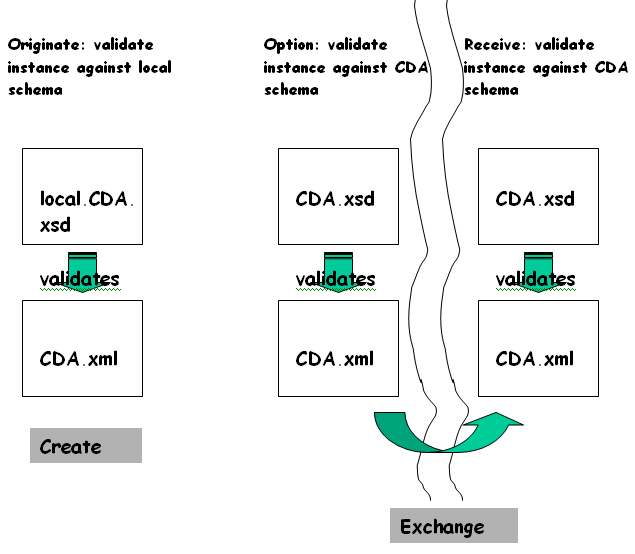
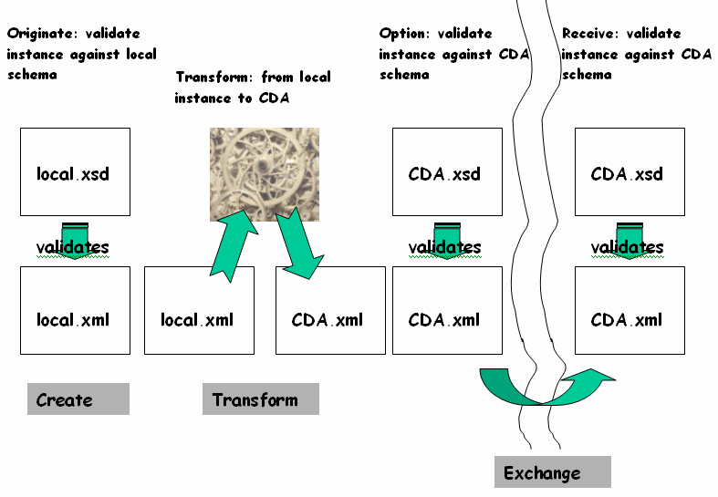

Implementation Notes - Clinical Document Architecture v2.0.1-sd-202510-matchbox-patch
- Table of Contents
- Overview
- Implementation Notes
Implementation Notes
Creating CDA Documents
Introduction
There are an ever-increasing variety of tools and techniques for creating CDA documents:
- Transcription: most clinical documents are created through a voice interface. CDA is available as an output from transcription vendors large and small today. Some are integrating natural language processing to provide coded structures within dictated CDAs.
- EMR/EHR: many electronic medical record vendors have CDA output capability, although they provide it on-demand, not as a standard feature. For EMRs, CDA is relatively simple type of report.
- XML forms: a new generation of XML tools for forms generation can create CDA on output.
- Knowledge base: at least one major US provider has built a CDA editor on top of a knowledge base for guided, structured entry.
- Dynamic query: dynamic assembly of CDA documents is used in some distributed applications to prepopulate documents from existing data stores, such as lab result databases. This method can be used in conjunction with any of the others.
This appendix considers not the specific tools and technologies, but is intended as a general guide to use of CDA in document creation.
Before you start: RIM compliance
- structures, vocabulary, datatypes
Creating a CDA-compliant instance, by definition, means that the information contained within is defined by the HL7 RIM. Regardless of your starting point or method of document generation, when you are done, the computable semantics of the document will derive their meaning from the relationship between RIM classes, controlled vocabulary and the V3 RIM datatypes. Any CDA-generation implementation must start with an examination of how document requirements relate to the RIM, the datatypes and vocabulary.
The RIM, however, is a highly abstract model and recognizes many extensive vocabulary domains. While RIM-mapping is a necessary condition for CDA generation, it is not sufficient to determine the method of generation or to drive a user interface for document creation.
An exchange specification, not an authoring specification
- CDA is not deterministic for document creation
CDA is a specification for the exchange form of a clinical document. A CDA schema can validate many of the conformance requirements, but will be too general for most authoring applications. In general, standards for interoperability and broadbased exchange will not directly drive an authoring GUI. Given the extent of the CDA domain – clinical care – the requirements for generalized exchange overlap with, but don’t match, the requirements for driving an authoring interface.
For example, the CDA requirement for human readability demands that a single stylesheet render the authenticated clinical content of any CDA document. If CDA elements were defined in the generic schema that corresponds to the sections of a document, <historyOfPresentIllness> or <Subjective>, for example, a stylesheet would need to recognize each of these tags as section-level tags and render them accordingly. The CDA approach, defining <section> and asserting the type of section through coded vocabulary means that not only is the CDA extensible through the externally-maintained vocabulary domains, but that document designers have the flexibility to create hierarchies of sections and to name and tag them according to local requirements, while maintaining compatibility for the exchange context. Thus, while specific tagging that makes it easier to drive a GUI is fine locally, where practice can be more tightly constrained, CDA needs to take a more general approach.
Both sets of requirements, for authoring and for exchange, should be recognized. Within a defined community of interest, such as a single business enterprise, a professional society or in some cases, local and regional health authorities, there can be tight agreement on the form of a document so that the authoring definitions and the exchange definitions coincide. Unless and until there is universal agreement, there can be no universal exchange unless the diversity of local requirements is acknowledged. This is a long-winded way of saying that CDA will remain a general exchange standard, and other approaches must be available to define data entry and document creation validation requirements.
General approaches: constrain or transform
- constrain: emit valid CDA directly from the authoring system using a schema that isn’t CDA
- transform: example - emit local XML, map to CDA
Given that CDA is not an authoring schema, there are two logical alternatives to creating valid CDA instances.
The first is to add constraints to the CDA schema so that the resulting specification defines a particular document type (see the following exhibit "Creating a CDA through a local schema"). There are several technologies available for adding constraints. One approach is to modify the CDA schema itself to a local variant (local.cda.xsd below). Modifications could include limiting the levels of nesting; constraining vocabulary and sequence, for example requiring that a section with a LOINC code for "Subjective" initiate the document body and be followed by a section coded "Objective". These modifications could be expressed in W3C Schema or as Xpath statements within the local schema. Instances that validate against this constrained, local version of CDA are, by definition, also valid CDA instances.

Templates are one type of constraint. HL7 is in the process of defining a formal template mechanism (see The "A" in "CDA").
The second approach is to create a local schema and then transform the local XML instance to CDA

CDA and Semantic Interoperability
A long term objective of CDA and other specifications in the V3 family is to achieve increasingly greater and greater "semantic interoperability", which might be defined as the ability of two applications to share data, with no prior negotiations, such that decision support within each application continues to function reliably when processed against the received data.
CDA seeks to achieve the highest level of constraint that can exist in an international standard. Where international consensus is lacking, and where uses cases in different realms currently preclude consensus, CDA will need to be necessarily inclusive. In such areas, ongoing harmonization and consensus building will further enable semantic interoperability, which will be reflected in future iterations of CDA.
While the framework provided by the RIM and by CDA and by the shared HL7 Clinical Statement Model are a critical component of semantic interoperability, they are not currently sufficient, particularly given the lack of global terminology solution, and the fact that each terminology overlaps with the RIM in different ways. Such terminology solutions are outside the scope of CDA, and will need to be addressed in various national and international forums.